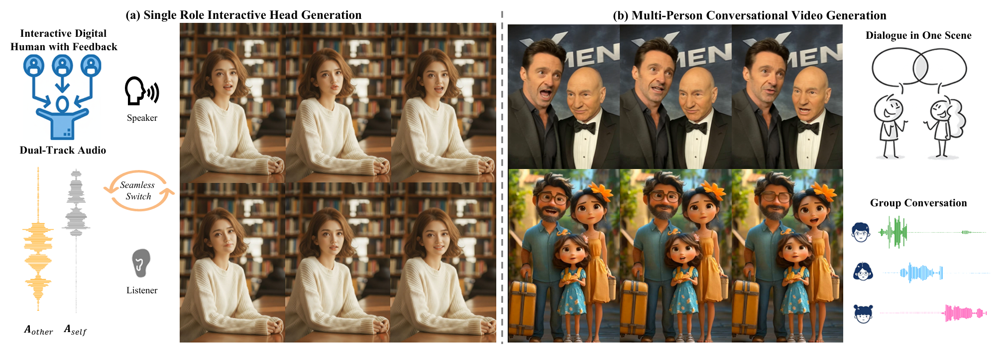
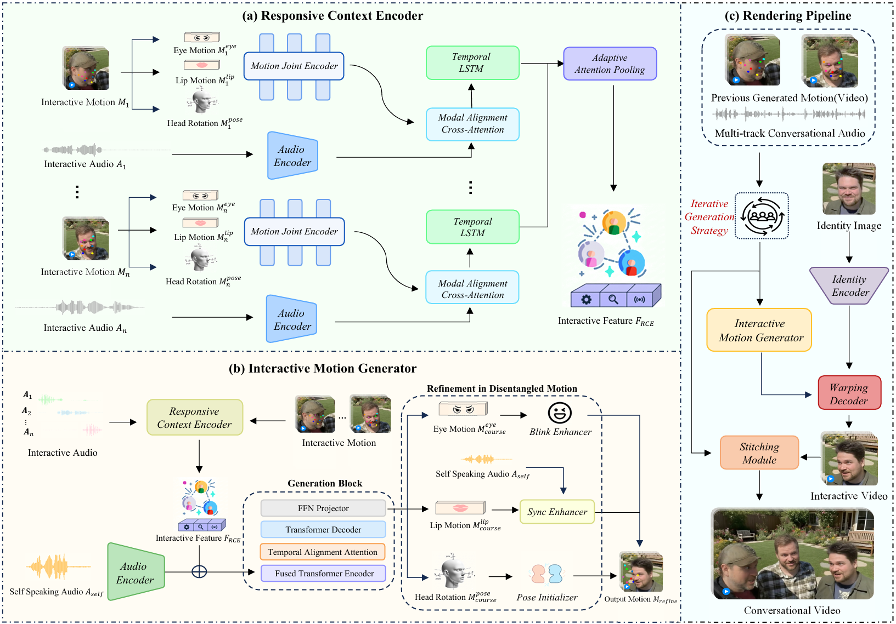

Accepted to ECCV 2026
Towards Flexible, Natural, Efficient Interaction for Conversational Talking Face Generation
1 MAIS, Institute of Automation, Chinese Academy of Sciences
2 School of Artificial Intelligence, University of Chinese Academy of Sciences
3 CAIR, HKISI, Chinese Academy of Sciences
4 SCSE, FIE, M.U.S.T
* Corresponding author

Paper
Abstract
Conversational talking face generation has recently attracted increasing attention, aiming to synthesize interactive talking videos where characters speak, listen, and respond dynamically to each other. This task presents three core challenges: 1) Flexibility: enabling multi-round dialogues with an arbitrary number of participants; 2) Naturalness: maintaining coherent motion and appropriate non-verbal feedback throughout the interaction; and 3) Efficiency: achieving real-time generation and low computation overhead for long-term continuous online conversation. Despite recent advances, existing methods still fall short in balancing all three requirements. To bridge this gap, we introduce InterTalk, a novel and efficient framework designed for highly interactive conversational talking face generation. Built upon a motion-based architecture, InterTalk supports real-time conversation synthesis. Our method achieves strong flexibility by explicitly modeling multi-round conversational dynamics among each participant, eliminating constraints on their numbers. To enhance interactivity, we incorporate motion feedback from multiple participants and introduce an iterative generation strategy for more natural behaviors. Besides, we disentangle motion into several facial components, enabling targeted refinements for natural response such as precise lip-sync and realistic eye-blinking. Finally, we construct a new multi-person conversational dataset and enrich it with 3D face-based data augmentation. Extensive experiments demonstrate that InterTalk achieves superior interaction quality while maintaining real-time performance at 30 FPS.
InterTalk
Method

InterTalk